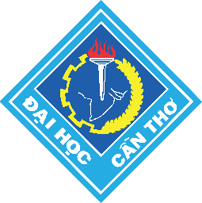

Quá trình học tập

Tôi đang theo học tại trường Công nghệ thông tin - Truyền thông, Đại học Cần Thơ, tập trung nâng cao kiến thức về bảo mật hệ thống, mạng và các kỹ thuật phòng ngừa tấn công. Tôi luôn chủ động học hỏi để phát triển kỹ năng thực tế và tư duy phân tích trong môi trường công nghệ.
- Trường: Công nghệ thông tin - Truyền thông, Đại học Cần Thơ
- Lớp: DI26D2A1
- Học các nền tảng cơ bản về mạng máy tính và bảo mật thông tin.
- Khám phá các nguyên tắc an toàn dữ liệu, xác thực và kiểm soát truy cập.
- Thực hành nghiên cứu các kiến thức liên quan đến bảo mật ứng dụng và hệ thống.
Lĩnh vực chuyên môn và kỹ năng
An toàn thông tin
Bảo mật hệ thống, kiểm soát truy cập, bảo vệ dữ liệu và nhận diện các rủi ro mạng.
Công nghệ
HTML, CSS, JavaScript, Git/GitHub, hiểu cơ bản về quy trình làm việc kỹ thuật.
Tools
VS Code, GitHub, Google Sites, GitHub Pages, các công cụ hỗ trợ học tập và nghiên cứu.
Kinh nghiệm và thành tích
Tôi đã tích lũy được những kỹ năng cơ bản trong học tập và thực hành công nghệ, đặc biệt là trong lĩnh vực an toàn thông tin. Qua từng bài tập và dự án, tôi dần rèn luyện được khả năng suy nghĩ logic, xử lý vấn đề và làm việc chủ động.
- Hoàn thành các bài học về mạng, bảo mật cơ bản và xử lý tình huống kỹ thuật.
- Tham gia các dự án học tập giúp phát triển kỹ năng làm việc nhóm và tư duy sáng tạo.
- Không ngừng học hỏi để nâng cao kiến thức và sẵn sàng đối mặt với thách thức mới.
Sở thích và cá nhân hóa
Sở thích: Tìm hiểu về công nghệ, nghiên cứu bảo mật, đọc tài liệu, học tập và thử nghiệm các kỹ thuật mới.
Các thành tích cá nhân: Luôn chủ động học tập, có tinh thần cầu tiến và mong muốn phát triển bản thân trong lĩnh vực an toàn thông tin.
Liên hệ: quyenb2605460@student.ctu.edu.vn